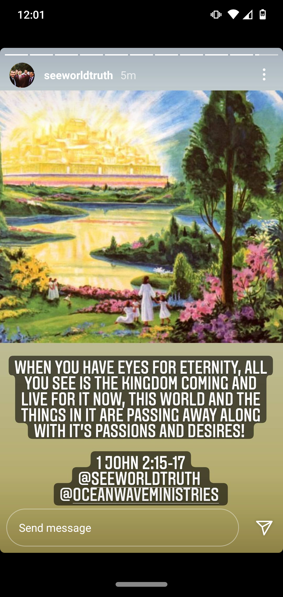
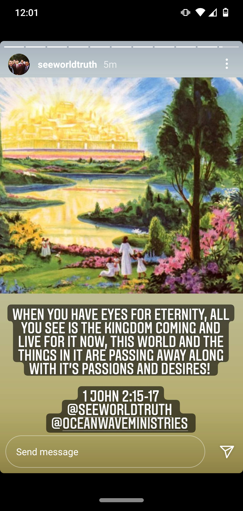

About Eyes For Eternity |
Howdy, my name's Zach. I'm the guy that runs this site! I enjoy doing amateur coding in my free time - what a better way to use it than for the Kingdom.
A bit about myself, I'm a guitar player - specifically in extended range guitar (guitars with more than 6 strings, ie, 7 and 9 string), I write perform a weird blend that's based around progressive metal, but takes influence from jazz, classical, and other styles.
This site was begun in July 2022 just for the fun of coding something. The original homepage was boring, bland, and dark (not to mention it didn't resize well on mobile!). In August I spent much time developing and redesigning this site into what I believe God wants it to be.
As for the name, the phrase came from an impactful post from brother Todd Aaron on Instagram:

It's been something that's stuck with me and I've used it for account usernames and such, but when I started on this site, I KNEW this was the right name.
There's not a whole lot to say for myself or my life. But I hope this gives you an adequate background of who I am. I hope you've found this sight useful, if you ever want/need to contact me regarding anything about this site, you can reach me here.
This site was begun in July 2022 just for the fun of coding something. The original homepage was boring, bland, and dark (not to mention it didn't resize well on mobile!). In August I spent much time developing and redesigning this site into what I believe God wants it to be.
As for the name, the phrase came from an impactful post from brother Todd Aaron on Instagram:
{kind=link}
It's been something that's stuck with me and I've used it for account usernames and such, but when I started on this site, I KNEW this was the right name.
There's not a whole lot to say for myself or my life. But I hope this gives you an adequate background of who I am. I hope you've found this sight useful, if you ever want/need to contact me regarding anything about this site, you can reach me here.